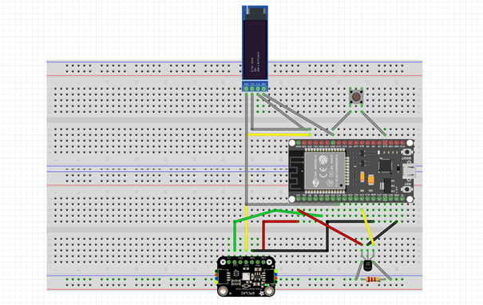
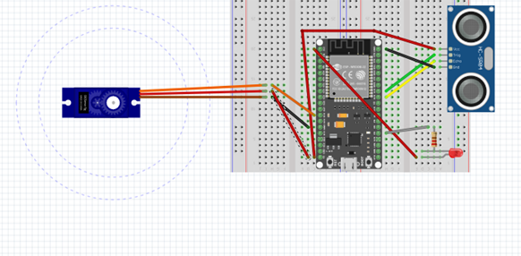
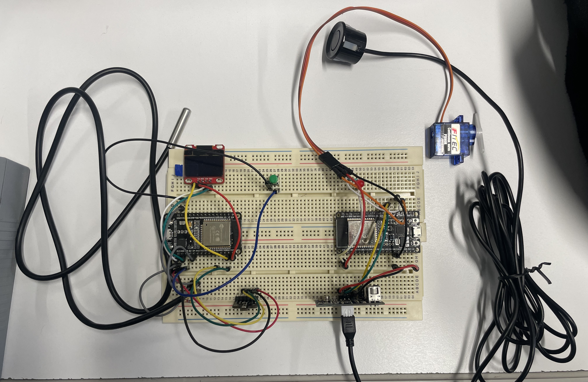
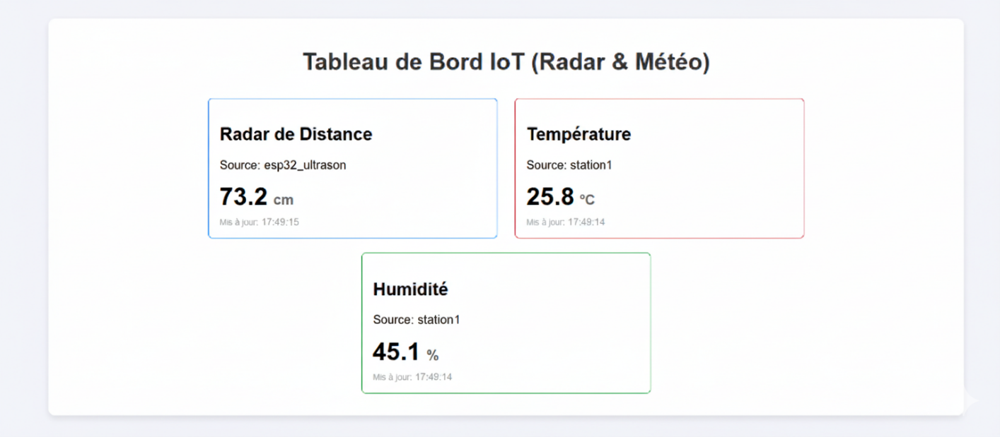

Découvrir et mettre en place un réseau IoT - SAÉ 3.IOM.04
L'objectif de cette SAÉ était de concevoir un système connecté complet, allant de l'assemblage des composants électroniques jusqu'à l'affichage des données sur une page web. Le projet s'articule autour de deux modules connectés : une station météo et un radar de détection d'obstacles.
J'ai d'abord modélisé l'architecture sur Fritzing pour planifier les connexions. Ensuite, je suis passé au câblage physique sur plaques d'essai avec des microcontrôleurs ESP32, des capteurs de température/humidité (BME680, DS18B20), un capteur à ultrasons et un servomoteur. Cette étape de réalisation concrète a exigé de la rigueur pour assurer une bonne communication électronique.
Une fois le matériel opérationnel, j'ai développé les scripts embarqués permettant aux ESP32 de se connecter au réseau Wi-Fi et de publier les données via le protocole MQTT. L'aboutissement du projet est un tableau de bord web qui souscrit à ces données pour les afficher dynamiquement.



